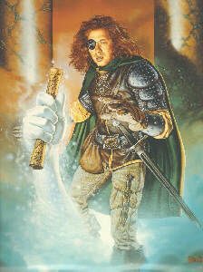

SPELL SYSTEM
Introduction

DarkeMUD has a very complex system of spellcasting with many spells
available to players through the variety of guilds. Here, we will
discuss the entire spell system, including learning spells, casting
spells, and other issues which may arise while spellcasting.
The system itself is quite simple on the surface. A player learns a
spell similarly to training in a skill (development or "dev" points are
spent), with a few differences discussed below. The player may learn the
spell at power level 1 through 6, with each successive level being more
costly. Upon casting a spell, the player may choose the power level at
which to cast it, with a maximum of the level known by the player. The
power level multiplies both the mp (magic point) cost of the spell and
its effects, allowing the player to taylor the power of the spell to the
situation. The effect of increasing spell power varies from spell to
spell, but in general, the spell is harder to cast, more effective, and
harder to resist at higher power.
Learning Spells
Spells are learned at the player's guild, obviously meaning you must
join a guild before you can learn spells. With the permission of the
guildmaster, you may learn spells at other guilds, at increased cost.
Spells are learned by "power levels," which range from 1 to 6. You may
find the development cost of a spell in its help (type 'help spell
[spell-name]'). The cost of training a spell is the development cost
times the level you wish to attain. If you have developed it once
already at your level, the cost is equal to the fast development cost
times the level. If you wish to train more than twice in a level, the
cost is cumulative. For example, the spell 'cure light wounds' has a
development cost of 7 and a fast development cost of 25.
| Train: | Cost: |
|
| Once | 7 (7 * power level 1) |
| Twice | 50 (25 * power level 2) |
| Thrice | 150 ((25 + 25) * power level 3) |
| Four times | 300 ((25 + 25 + 25) * power level 4) |
etc...
Keep in mind that once you advance a level, you start over at the regular
development cost...for example:
| Train: | Cost: |
| Once | 7 (7 * power level 1) |
| Twice | 50 (25 * power level 2) |
| ..then you advance a level.. |
| Thrice | 21 (7 * power level 3) |
| Four times | 100 (25 * power level 4) |
etc....
...meaning it is much more efficient to train slowly.
Spell Casting Skills
The spell power level only determines the maximum power level at
which you may cast a spell and has nothing to do with your chance of
success in spellcasting. This is determined by the spell casting SKILL.
To see which skill is used to cast any particular spell, type 'help spell
[spell-name]'. If you do not have the necessary skill, you will not be
able to cast a spell.
At its most basic level, the skill in casting represents a percent
chance that you will succeed in casting at any particular time. Note
that you have a 5% chance of fumbling a spell REGARDLESS of your skill.
See below for discussion of spell fumbles. Spell casting skills are
trained similarly to any other skill and are usually quite costly.
Fumbling a Spell
Regardless of your casting chance, there is a 5% chance of
fumbling any spell on casting. The effects of the fumble vary with the
spell itself...combat spells go off at a random target, area spells hit
people in your party by accident, heal spells harm instead, etc.
Basically this is here to keep you on your toes and to counterbalance
the power of spellcasting guilds against more combat-oriented guilds.
Moon Magi
The Moon Mage guild is unique in that they have access to most
spells on the mud at base or slightly increased cost. They, however,
suffer an important disadvantage. Every spell in DarkeMUD is linked to
one of the three moons: Warzau (red, governs combat and necromancy),
Ankh (blue, governs healing and protection), and Luna (green, governs
summoning and other sorceries). If you wish to see what moon is linked
to a particular spell, type 'help spell [spell-name]'.
If the moon linked to a spell you wish to cast is full, you
receive bonuses to casting, and the mp cost is reduced. If the moon is
waxing or waning, you receive almost no modification. However, if the
moon is new (not visible), you receive serious penalties to casting,
and mp cost is almost DOUBLED! Therefore, moon magi may only use
certain colleges of magic at certain times. Fortunately, most are
competent astronomers, and can divine the phases of the moons even
during the daytime.
Casting Spells
Casting spells is accomplished by using the 'cast' command (see
'help cast'). While casting the spell, you supply the target (if
necessary) and the power level. Note that you cannot cast a spell at a
power level higher than the one at which you know it. For an example,
if you want to cast the 'magic missile' spell at a turkey at power
level 4, you would do this:
cast *4 magic missile at turkey
After typing the cast command, you will have to wait a number of
2-second turns equal to the casting time of the spell until it goes off.
Except as noted below, everyone in the room will be able to see what you
are casting, and some sorcerers may be able to tell WHAT SPELL you are
casting as well. If you are in combat, you cannot strike when you are
casting. Once the spell goes off, the effects (whatever they may be) are
resolved. If you fail the spell, you still lose the magic points (mp)
equal to the power of the spell times the base mp cost. You cannot, of
course, cast a spell if you have insufficient mp. Note also, that if you
move while you are in the middle of casting a spell, the spell is
interrupted, and you suffer no loss of mp.
Silent Casting and Move While Casting
If you know a casting skill for a particular spell at 80% or more,
you may cast that spell "silently." When you begin casting a spell, only
sorcerers with the "spell sense" skill will be able to tell if you are
casting. Others will be completely blind to the casting, allowing you to
surprise them!
If you know a casting skill for a particular spell at 95% or more,
you may move while casting. Basically, after you begin casting a spell,
you may move freely about until the spell goes off without interrupting
the spell. If you are creative enough, you can figure out several ways
to exploit this fact.
Resisting a Spell
Certain (in fact, most) spells may be resisted. In some cases,
resisting a spell means that you suffer no effects at all, while in some
cases, the effects are merely reduced. The chance of resisting a spell
depends on the target's stats. Higher constitution, intelligence, and
wisdom help particularly.
That's It!
Well, that's the spell system. Hope you enjoy it. Hop on over to
the post office and mail Diewarzau if you think anything was left out,
and use the idea command for suggestions. Thanx!